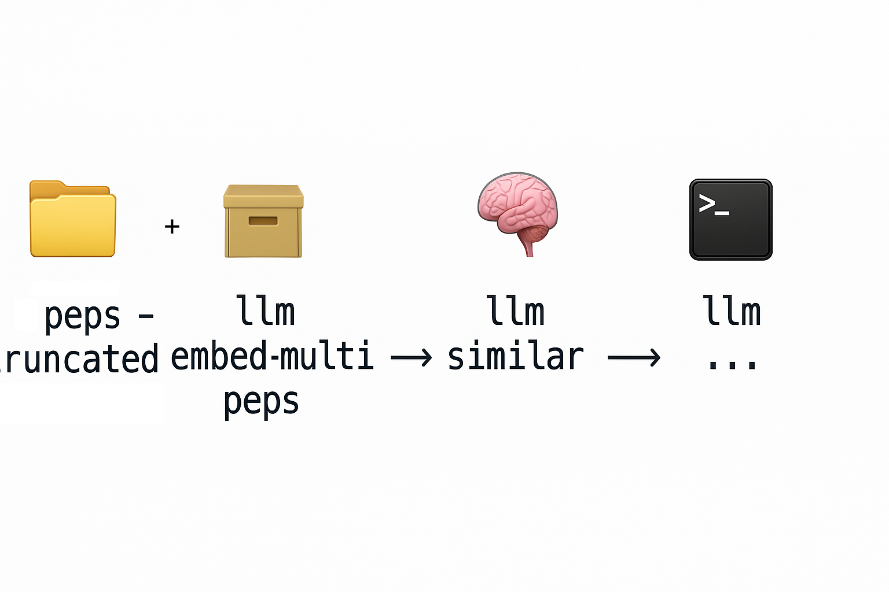

Einer der coolsten Aha-Momente der letzten Tage bei mir war, wie einfach und niederschweflig das Arbeiten mit Retrieval-Augmented Generation (RAG) von der Shell inzwischen sein kann – ganz ohne spezielle Infrastruktur, Vektor-Datenbank oder Server-Backend. Das Python-Toolllm macht das möglich: RAG direkt aus der Kommandozeile, mit SQLite als Backend und einfachen Kommandos, die sich hervorragend in Shell-Workflows integrieren lassen.
Ein Power Tool für Sprachmodelle in der Shell
llm kann natürlich noch viel mehr und ist ein Power Tool, das den Einsatz von KI direkt im Terminal erlaubt. Es erlaubt mit beliebigen API-Providern oder lokalen Modellen zu sprechen und integriert diese damit nahtlos in eigene Skripte. Use Cases: Daten hinein pipen und mit dem LLM bearbeiten. Ob zusammenfassen, erklären, übersetzen, mit einem aufwendigen Prompt aus einer Datei beackern… Da geht so viel. Egal was Ihr aus diesem Artikel mitnehmt, zumindest sollte es sein das Ihr llm in euren Workflow aufnehmt und installiert.
Der RAG-Workflow von der Shell aus
Ein kompletter RAG-Workflow funktioniert mit llm in wenigen Schritten. Diese Demo hier hab ich von Simon Willison geklaut, dem Autor von llm. Hier wird semantische Suche in den Python Enhancement Proposals demonstriert. Dieses Tutorial verwendet einen lokalen LLM-Server, man kann das aber natürlich auch mit GitHub Copilot oder ähnlichen Modellen machen. Herauszufinden wie die dort heißen und zu verbinden sind bleibt ein Exercise für den Leser.
1. Dateien vorbereiten
Wir erstellen gekürzte Versionen von Textdateien:
mkdir -p peps-truncated for f in peps/*.rst; do head -c 8000 "$f" > "peps-truncated/$(basename "$f")" done
Das ist natürlich streng genommen falsch, weil wir ganz viel Daten wegschmeißen. Einiges spricht aber trotzdem dafür:
- Gerade lokale Modelle haben gerne nicht so große Kontext-Fenster und da muss das Dokument reinpassen.
- Meistens steht am Anfang eines Dokuments worum es geht. Für unsere Zwecke also eine gute Näherung.
Um das später in ein Produkt umzuwandeln müssten wir uns noch weitere Strategien anschauen, z.B. mit einem Sliding Window über die Dokumente zu gehen und für jeden Abschnitt ein Embedding zu erzeugen. Grundsätzlich ist es aber eine gute Idee verschiedene Indexe zu erzeugen die unterschiedliche Zwecke erfüllen.
2. Vektor-Index erstellen
llm embed-multi peps \ -m mxbai-embed-large \ --files peps-truncated 'pep-3*.rst' \ -d peps.db \ --store
Das erzeugt eine SQLite-Datenbank mit eingebetteten Vektoren. Wichtig: Die Datenbank speichert auch, mit welchem Modell die Einbettung erfolgte – bei weiteren Operationen auf der gleichen Collection peps ignoriert llm den Modell-Parameter ohne Fehlermeldung!
Seiten-Notiz: Embeddings, was ist das? Ein Embedding ist eine Umwandlung von einem Text in eine Zahlenreihe (Mathematisch: Einen Vektor). Jeder dieser Vektoren beschreibt eine Koordinate in einem Hoch-Dimensionalen Raum, mit der Eigenschaft, das Koordinaten die sich Nahe sind von einem Text kommen der semantisch Ähnlich ist. Darin kann man sogar Rechnen, ein etwas überstrapaziertes Beispiel wäre z.B. der Vektor für König + Weiblich = Königin. Mehr gibts hier
3. Abfragen stellen
llm similar -c "What do string templates look like?" \ -d peps.db -n 2 peps \ | llm -s "Answer the question: What do string templates look like?" \ -m devstral -o num_ctx 256_00
Hier wird erst ähnliche Inhalte zur Frage gesucht. Wichtige Details: Das Kontext-Fenster des Sprachmodells das antwortet muss groß genug sein, das es alle Antworten in seinen Kontext aufnehmen kann. Ansonsten wird gerne der Anfang abgeschnitten - und da steht natürlich der Treffer mit dem besten Score.
4. Automatisieren
Wir können sogar direkt ein Skript generieren lassen:
llm ' Build me a bash script like this: ./pep-qa.sh "What do string templates look like?" It should first run: llm similar -c $question -d peps.db peps Then it should pipe the output from that to: llm -s "Answer the question: $question" -m gpt-4.1-mini That last command should run so the output is visible as it runs. ' -x > pep-qa.sh
Fazit
Was früher nach viel Setup aussah (Vektor-Datenbank, Backend-API, RAG-Pipeline), ist heute in wenigen Shell-Befehlen machbar. SQLite funktioniert dabei erstaunlich gut – llm führt einfach einen Full-Table-Scan durch und berechnet die Vektor-Abstände direkt. Das ist nicht hyper-skalierbar, aber bis 10.000 bis 100.000 Einträge durchaus brauchbar.
Und das Beste: llm lässt sich überall in bestehende Shell-Skripte und Workflows einbauen – sogar mit piped Input. Wer also mal eben eine intelligente Suche oder ein Sprachmodell in seinen CLI-Workflow integrieren will, findet hier ein extrem mächtiges Toolset.
Ich kann nur empfehlen ein Shell-Werkzeug wie llm zu lernen.